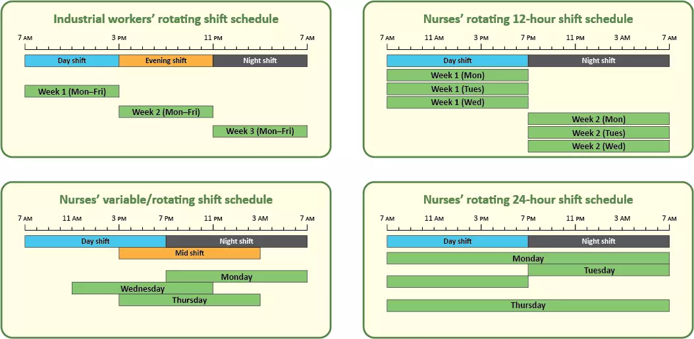
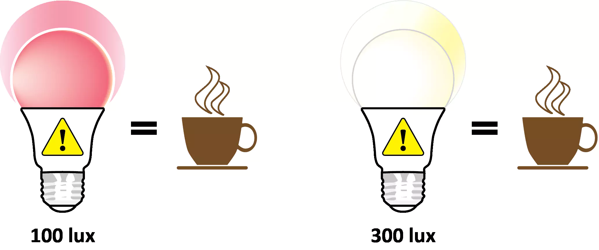

Shift work has been linked to poor sleep, chronic metabolic
disorders (e.g., cardiovascular disease, diabetes, and
obesity), depression, and elevated risk for the occurrence
of accidents, especially when workers’ schedules involve
night and early morning shifts (1-5). These conditions can
worsen over time with the number of shifts worked per month,
and long-term exposure to nighttime shift work has long been
associated with increased risks for several forms of cancer
(6-8). Research conducted over the last 40 years has found a
strong link between health problems and disruption of the
human circadian system (9, 10), which regulates all of our
bodily functions, essentially telling our body to do the
right things at the right times.
In 2007, the World Health Organization’s International
Agency for Research on Cancer declared “shift work that
involves circadian disruption” to be a probable carcinogen,
based on “limited evidence in humans for the carcinogenicity
of shift work that involves night work” and “sufficient
evidence in experimental animals” that exposure to light
during their biological night is carcinogenic (11).
2017-2018 data, United States Bureau of Labor Statistics
(2019).
The effects are far-reaching, and extend well beyond the
healthcare sector. The most recent (2017–2018) statistics
for the U.S. labor force (12, 13) indicate that about 16%
(23.7 million) of all full-time wage and salaried employees
work evening/swing shifts (typically, 3–11 PM), night shifts
(11 PM to 7 AM), rotating shifts (alternating days,
evenings, and nights over successive work cycles), or other
schedules falling outside conventional daytime work hours (7
AM to 6 PM). About 20–30% of these workers are thought to
experience at least some symptoms of circadian disruption,
such as excessive daytime sleepiness or insomnia (14).
Although more-recent data are not available from the US
Bureau of Labor Statistics (15) due to changes in
classifications, the proportion of shift-working nurses is
probably much higher that of shift worker in other sectors,
and research show that many nurses experience sleep problems
(see Sleep, accidents, and shift work).

A typical industrial worker’s rotating shift schedule (top
left) compared to a typical nurses’ rotating shift
schedule (top right). Many nurses work three 12-hour
shifts per week, but it is not unheard of for nurses to
work day-, night-, and mid-shifts in the same week (bottom
left) or even 24-hour shifts (bottom right, assuming a
12-hour minimum between shifts). The green bars represent
hours spent working.
Risks of Shift Work
Sleep problems are common in healthcare workers, almost 50%
of whom sleep fewer than 7 hours per 24-hour cycle (34),
which places them among workers with the highest prevalence
of short sleep durations for all occupations (35). Recent
research examining shift-working nurses shows that day- and
evening-shift nurses experience more regular and consistent
rest–activity cycles compared to night-shift nurses (36).
Nurses showing greater sleep fragmentation and/or more
irregular rest–activity cycles also experienced poorer sleep
quality and lower daytime activity levels on workdays.
Poor sleep has consequences for health and emotional
well-being. A 2018 long-term study of healthcare shift
workers in four U.S. academic hospitals found that
participants who reported sleep disorders on a screening
questionnaire were almost twice as likely to experience
adverse safety outcomes over the following 6 months and
increased risk for anxiety or depression by almost
two-thirds (37).
Most of the available research examining specific
work-related injuries to nurses focuses on needle-stick and
musculoskeletal injuries, with a number of those studies
associating elevated risk for injury with shift work and
night shifts.
A 2007 study linked increased needle-stick injury risk
with the amount of time worked per day and month, as well
as with working evenings/nights and shifts longer than 13
hours (38).
A 2012 study examining injured worker case files found
increased risk for injury when nurses and patient-care
associates worked two or more consecutive 12-hour shifts,
especially when those shifts involved nights, compared to
work shifts that were preceded by time off (39).
A 2015 survey of 1,744 newly licensed registered nurses
found that needle-stick injury risk increased 32% for
those working overtime and 16% for those working nights
(40).
Risks for shift workers do not end in the workplace.
Because many nurses are sleep-deprived during their work
week, the drive home after their shift can be particularly
hazardous. These data are supported by and the most recent
(2018–2019) Healthy Nurse Survey conducted by the American
Nurses Association, which reports that 14% of nurses
either nodded off or fell asleep while driving during the
past 30 days (34).
A landmark 1992 study of 635 Massachusetts nurses
published in the American Journal of Public Health showed
that, compared to those working either day shifts or
evening shifts only, rotating-shift workers were twice as
likely to fall asleep while driving home and experience
near-miss car accidents (41).
Nurses working night shifts are also more likely to have
difficulty staying awake while driving home compared to
nurses working other shifts (42, 43).
A 2013 study using objective (rest-activity, eye movement)
and subjective (questionnaires) assessments of nurses’
drowsiness and their driving performance on a controlled
track following an 8–10-hour night shift found that the
participants were far more likely to experience a
hazardous driving event than on their drive to work before
the shift, especially if they had been awake for 16 hours
or more (44).
A more recent 2019 Australian study employing similar
methods confirmed this relationship between adverse
driving events and the drive home after the night shift,
finding that sleepiness-related events tended to occur
after the first shift and inattention-related events
tended to occur after subsequent shifts in the same cycle
(45).
The Australian study also found a connection between
adverse driving events, the timing of the nurses circadian
rhythms, and the time nurses had spent awake (45).
Shift Work, Sleep, and Accidents
Regardless of shift worked, healthcare work in general
carries significant risk for work absences due to illness,
stress, and injury, especially among older workers (16, 17).
Healthcare support workers have the highest work absence
rates of any occupation (18).
Healthcare practitioners and technicians have the highest
work absence rates of any professional occupation (18)
While rates are declining across all US work sectors,
OSHA-recordable illness and injuries the rates for
hospital workers still remain nearly twice as high as
those for all private industry combined (19, 20).
Injuries among healthcare professionals occur at almost
three times the rate experienced by other professionals
(21).
Shift work is an inescapable fact of life in the 24-hour
operating environment of modern hospitals. To ensure
continuity of patient care (e.g. efficiency, fewer patient
handoffs) and accommodate nurses’ personal preferences
(e.g., shorter work week, improved work-life balance) (22,
23), nursing schedules typically follow 12-hour shifts that
can include working through the night (see graphic above),
when alertness levels are the lowest and the pressure for
sleep is the highest (see Sleep, accidents, and shift work).
Nursing therefore carries an inherent risk for disruption of
the circadian system, and nurses who work night shifts show
elevated health and occupational safety risks compared to
their colleagues who work days (24-26). It is reasonable to
infer that the greater the irregularity of work and sleep,
the greater the risk to health.
The research on risks posed to shift-working nurses shows:
Based on a 22-year follow-up on almost 75,000 older (65–66
years old) nurses who took part in the first Nurses’
Health Study (27) beginning in 1976, mortality from all
causes (especially cardiovascular disease) increased
significantly among those working rotating shifts for 5
years or more compared to their colleagues who never
worked nights (25).
A more-recent review of data from over 114,000
participants in the second Nurses’ Health Study II
(beginning in 1989) found elevated risk for breast cancer
among nurses who had worked rotating shifts for 20 years
or more (28), as supported by other studies (29).
Generally, elevated risk for breast cancer is greatest
among nurses who work night shifts (8), especially among
those who have been exposed to rotating night-shift work
at a younger age (28).
Some recent research has cast doubt on claims of an
association between working night shifts and breast
cancer, however, so continued investigation has been
recommended (30-32).
The risks are not limited to physical health. Nurses
working longer shifts (i.e., >10 hours) are up to 2.5×
more likely to experience burnout (i.e., emotional
exhaustion, depersonalization of patients, lack of
vitality) and job dissatisfaction compared to nurses
working shorter shifts (33). Working shifts longer than 13
hours is associated with decreased well-being, increased
job turnover, and greater patient dissatisfaction (33).
How Light Can Help
Key Points
Night-shift healthcare workers are clearly at higher risk
for accidents and health problems associated with
circadian disruption.
In the short term, these health problems broadly resemble
those associated with jet lag, such as sleep and digestive
troubles, fatigue, and mood problems.
Longer term night-shift work has been associated with
chronic metabolic diseases (e.g., cardiovascular disease,
diabetes, and obesity), various forms of cancer, mood
disorders, and elevated risk for accidents both on and off
the job.
While further research is needed, there is a present
growing urgency to address these problems in innovative
ways.
The approach described in this web resource joins a
growing body of research into non-pharmacological lighting
interventions for treating depression, chronic pain, sleep
problems, and even Alzheimer’s disease and related
dementias (ADRD). These approaches have shown great
promise for improving peoples’ lives without the
undesirable side effects of conventional medications.
Light and Circadian Rhythms
Light is not just for vision. While it has always been
essential for seeing the world around us, light has also
played a crucial role in our evolutionary adaptation to the
natural 24-hour environment created by Earth’s rotation.
With a few exceptions, most living things (including plants,
insects, and even microbes) cycle through internal or
endogenous biological rhythms that repeat daily. Called
circadian rhythms, they include all of our metabolic,
physiological, psychological, and behavioral processes.
Human circadian rhythms are synchronized by the pattern of
light and dark reaching the back of our eyes, and primarily
regulated by a structure in the brain’s hypothalamus region
called the master biological clock. (See Regulation of
circadian rhythms)
This master biological clock interacts with and regulates a
complex network of biological clocks that are found in
almost all tissue and every organ in the body. Each clock
has its own rhythmicity and responsibility for generating
and regulating the timing of its own circadian rhythm on
cues from the master clock (50, 51). Feeding and fasting,
body temperature, blood pressure, heart rate, kidney
function, immune system functions, and body temperature are
just a few examples of the circadian rhythms regulated by
these biological clocks. And the light received by our eyes’
retinas is the primary stimulus that makes everything tick
at the right time (52).
Schematic diagram of selected circadian rhythms with
respect to time of day, showing the some of the key
physiological processes (blood pressure, body temperature,
hormone secretion, etc.) summarized in the illustration
shown above.
Regulation of Circadian Rhythms
Why do circadian rhythms even need to be regulated? In the
absence of external or exogenous cues or zeitgebers (German
zeit = time, geber = giver), human circadian rhythms
free-run on a perpetually repeating cycle that is slightly
longer than the solar day. These cycles run about 24.2 hours
on average, with extremes of as long as 1-hour on either
side of that average depending on individual differences
between people (53).
Over time, without timing cues provided by the light and
dark patterns of the daily solar cycle received at the eyes,
our circadian rhythms and bodily processes would eventually
cycle out of sync with the local time of our variable,
seasonal environment. We would go to bed later and wake up
later, have difficulty getting to work on time and feeling
alert once we got there, become hungry outside regular
mealtimes, and feel fatigue in after-work social situations.
In other words, we would tend to experience the common
things of everyday life at the wrong time of day relative to
our work schedules, social and family commitments, and
biological needs.
Disruptive Lighting Scheme
Light level and spectrum are inadequate for
stimulating the circadian system
Circadian system free-runs on average period of
24.2 hours
The biological clock is out of sync with the
24-hour solar day
Short Term Effects
Sleep deprivation
Poor mood/behavior
Reduced performance/productivity
Lack of alertness
Long Term Effects
Cardiovascular and metabolic disease
Obesity
Some forms of cancer
Depression
Entraining Lighting Scheme
Bright light levels stimulate the circadian system
in the morning hours, while dimmer evening light
promotes a robust light/dark pattern for the
circadian system
Tunable white light going from cool in the morning
to warm in the evening further enhances a robust
scheme
24.2-hour biological clock becomes entrained to
24-hour solar day
Short Term Effects
Improved sleep
Better mood/behavior
Improved performance
Acute alertness
Long Term Effects
Improved cardiovascular and metabolic health
Resistance to depression
Resistance to obesity
Scientists who study circadian rhythms — known as
chronobiologists — measure the timing of our bodies’
cyclical processes, which can be tracked, for example, by
monitoring the body’s release of hormones like melatonin or
cortisol. When our circadian rhythms cycle on a later
schedule than they should, as indicated by the later timing
of the body’s release of nighttime production of melatonin,
for example, our circadian rhythms are said to be delayed.
In this case, we tend to fall asleep later in the evening or
into the early morning and wake up later. Conversely, when
our circadian rhythms cycle on an earlier schedule than
normal, leading us to fall asleep and wake up earlier, our
circadian rhythms are said to be advanced. (See 3.1
Hormones, sleep, and alertness.)
Depending on the time of day and the characteristics of any
light exposures that we might encounter, light can either
delay or advance the timing of our circadian rhythms (see
Light and the circadian system). This is basically what
happens when we cross multiple time zones and experience jet
lag, which becomes pronounced as we grow older and when
traveling east (54). Regardless of the direction traveled,
with the new destination comes a different schedule of light
and dark that is at odds with the one we left at home,
running either a few or even many hours too early or too
late.
Jet lag results in disturbed sleep and daytime fatigue,
generalized feelings of being under the weather, and
difficulty in concentrating because our circadian systems
have not yet adjusted to the new environment (55). But those
symptoms gradually subside as our circadian system becomes
synchronized or entrained to the new local environment by
adapting to our destination’s local solar cycle. Social
activities and shift work that might fall outside the
regular sleep/wake cycle, producing a similar effect, are
known to chronobiologists as social jet lag (56) and shift
work disorder (14, 57) (see Circadian entrainment and
disruption).
Conditions that can come with altering the habitual
sleep/wake cycle. (Habitual sleep times are shaded red and
altered sleep times are shaded gray.). Jet lag resulting
from transmeridian travel (top) is most pronounced when
traveling east, simply because it is generally easier for
humans to fall asleep later (as when traveling west) than
their usual bedtime compared to an earlier bedtime. As a
result, travelers can feel energized when everyone else is
sleepy, but lethargic when everyone else is raring and
ready to go. The effects of social jet lag (middle) can
resemble those of westward travel, with its later weekend
bedtimes and wake times, but the return to work on Monday
after a weekend of late nights can feel like a non-stop
overnight flight back east.
Effects resembling jet lag that can accompany shift work,
when they become chronic, are attributed to shift work
disorder. This condition can lead to alertness during the
daytime sleep period, drowsiness at work, and compromised
job performance among those who work through the night.
These ill effects pose increased risk for those employed
in the healthcare and transportation sectors as well as
those who are in their care (see Light, sleep, and
alertness).
The good news? The master biological clock can adjust to
jet lag by gradually entraining our circadian rhythms to
the new schedule. Adjustments to shift work can be more
challenging, but the tips provided in Lighting
applications can help!
Light and the Circadian System
Four key factors related to light-dark environmental cues
influence circadian entrainment:
The amount or level of light received at the eyes (“bright
or dim?”)
The spectral properties of the light experienced, either
short-wavelength (“cool” or “bluish”) or long-wavelength
(“warm” or “reddish”) light
The timing and duration of light exposures (“when, and for
how long?”)
A person’s cumulative history of light exposures (“how
much, what spectra, and when over the past 24 hours?”).
These lighting characteristics work together to affect the
circadian system, either entraining or desynchronizing our
circadian rhythms. For example, healthy people who follow
typical daytime work schedules require high levels (amount)
of short-wavelength (spectrum) light for at least 30 minutes
(duration) in the morning (timing) to promote circadian
entrainment, followed by exposure low levels (amount) of
long-wavelength (spectrum) light in the evening (timing).
This consistent daily pattern of light exposures (history)
promotes regular bedtimes, good quality sleep, and optimal
wake times for the day ahead. Due to various factors such as
age, individual differences between people, and varying
long-term histories of light exposure (e.g., permanent
night-shift workers or “night owl” chronotypes), people can
be differentially sensitive to light and thus will have
differential responses.
While these variable factors preclude a “one-size-fits-all”
lighting prescription for circadian entrainment and health,
this web resource provides some useful general guidelines
for the benefit of almost anyone. (See Lighting applications
for alertness, performance, and health. [section 4])
Circadian Entrainment and Disruption
The human master biological clock (SCN) in the hypothalamus
is activated when light received by the retinas is converted
into neural (i.e., electrochemical) signals in a process
known as circadian phototransduction, which employs a photic
neural pathway known as the retinohypothalamic tract (RHT)
that extends from the retinas to the SCN. The retinal cells
involved in phototransduction include the well-known rod and
cone photoreceptors as well as the intrinsically
photosensitive retinal ganglion cells (ipRGCs), which were
identified only at the turn of this century (58-60). Working
largely independently of image formation, the ipRGCs have
been documented to be active even in totally visually blind
animals and humans (61, 62).
The structures in the eyes and central nervous system that
regulate circadian rhythms, beginning with light/dark
patterns received at the retina that are converted into
neural signals (open blue arrow) and transmitted via the
retinohypothalamic tract, or RHT (b–f in the diagram). In
this diagram of the process for melatonin secretion, the
SCN and a structure called the paraventricular nucleus
(located in the hypothalamus [f]) transmit signals
(downward red arrow) to the sympathetic nervous system
(63), which in turn signals (upward red arrow) the pineal
gland to begin releasing the hormone.
Well-timed and carefully specified light exposures can
promote the entrainment of our circadian systems (see Light
and the circadian system). Exposure to light at the wrong
time, or not receiving enough light at the right time, has
become increasingly common since the advent of electrical
lighting over a century ago. Exposure to light at night
(LAN), and even a complete reversal of the day–night pattern
in the case of night-shift workers, have become facts of
life in our 24-hour society. Exposure to LAN and
insufficient exposure to light early in the day has been
linked with disruption of the circadian system (64).
Long-term disruption of the daily cycle of light and dark
can lead to chronic disruption of the circadian system,
which has been associated with metabolic (leading to weight
gain, obesity, and type 2 diabetes) and cardiometabolic
dysregulation, certain forms of cancer, depression, and
other maladies (10, 65, 66). Although the precise reasons
for this association are not yet clear, a growing body of
research suggests that this disruption might be related to
lighting conditions in the built environment and irregular
exposures to daylight associated with our around-the-clock
lifestyle.
Compared to regular daytime workers, nurses who work during
or through the night have very different needs that depend
on how they choose to adjust to their work schedules. As
detailed in Applications: Lighting for alertness,
performance, and health, some consider it desirable to adapt
to a nighttime schedule by becoming more or less nocturnal,
whereas others prefer to maintain an adjusted diurnal
schedule that permits them to engage in family, social, and
community activities. Whatever path is chosen, those working
at night need to regulate their exposure to high levels of
light while at work, especially blue light, while also being
careful to receive sufficient light to promote alertness and
perform specific critical visual tasks like inserting an IV
cannula.
Scientists at the Lighting Research Center (LRC) at
Rensselaer Polytechnic Institute have been exploring the
role that light plays in synchronizing the circadian system,
and how exposures to the right kind of light at the right
time can help to avoid these negative outcomes. Our research
to date among diverse populations such as office workers,
submariners, and older adults with Alzheimer’s disease
suggests that appropriately timed, tailored lighting can
improve measures of alertness, depression, mood, and
feelings of vitality. The research funded by this project
(NIOSH 5R01OH010668-03) indicates that similar lighting
solutions can also be applied to shift-working healthcare
personnel (see Red light: A novel, non-pharmacological
intervention to promote alertness in shift workers).
Key Points
Most living things cycle through natural circadian rhythms
that repeat daily and include all of our metabolic,
physiological, psychological, and behavioral processes.
Light received by our eyes’ retinas is the primary
stimulus that makes the biological clock tick.
The circadian system is stimulated by the amount of light
received at the eyes, the light’s spectral properties, the
timing and duration of exposure, and our personal history
of light exposures.
Shift work can disrupt circadian rhythms, but lighting can
be used to counter the disruption and promote good sleep,
healthy outcomes, and emotional well-being.
Light, Alertness, and Sleep
Light is not just for vision and stimulating the circadian
system. Light also exerts an acute alerting effect on humans
that is similar to the boost provided by a cup of coffee.
Yet as we already know from Light and circadian rhythms,
light’s alerting effect can come at a cost to circadian
entrainment, especially when experienced at the times we
might need it the most, like night shift. Depending on the
amount, spectral properties, and our history of exposure,
light at the wrong time can also disrupt our circadian
system and thereby threaten our health and well-being.
Hormones, Alertness, and Red Light
The human body’s central nervous and endocrine systems
transmit information throughout the body to regulate all
bodily functions. The nervous system is essentially a
hard-wired network made up of over 100,000 million nerve
cells that instantaneously transmit electrical signals from
the body’s peripheral nervous system and the outside world
to the central nervous system (i.e., the spinal cord to the
brain), which in turn dispatches electrical signals to
direct the actions of the body’s muscles, organs, and
tissues. The more slowly responding endocrine system, on the
other hand, sends chemical signals through the bloodstream
in the form of hormones excreted by the body’s endocrine
glands to regulate various processes (e.g., heart rate,
blood pressure, appetite, body temperature), including the
sleep/wake cycle.
As discussed in Light and the circadian system, the
secretion of the hormones melatonin and cortisol both follow
circadian rhythms that are regulated by inputs from the
master biological clock based on cues provided by the
patterns of light and dark received at the retinae (67).
Melatonin, known as the “darkness hormone” because it is
released at night and under conditions of darkness, is
produced by the pineal gland. In diurnal (i.e.,
daytime-active) species, melatonin signals to the body that
it is time for sleep (68). The concentration of melatonin in
the bloodstream begins to diminish in the latter hours of
sleep and after waking remains barely detectable throughout
the day.
Cortisol, produced by the adrenal glands, promotes the
synthesis and storage of glucose and influences metabolic,
immune, muscle, and functions (69) as well as various brain
activities as cognitive function (70) and the regulation of
emotions (71). In humans, cortisol remains in low
concentration in the bloodstream throughout the day but
gradually elevates throughout the night, culminating 30–45
minutes after waking in a sharp increase known as the
cortisol awakening response (72, 73). Although our
understanding of cortisol and its response to light are not
as well understood as that of melatonin (74, 75), it has
been speculated that the cortisol awakening response
promotes alertness and arousal in anticipation of the
forthcoming day’s demands (76-78).
The effects of light on alertness at night are well
documented (79-82) and have been associated with light’s
ability to suppress melatonin (83), particularly when the
source is short-wavelength (“cool” or “bluish”) light that
matches the 460-nm peak spectral sensitivity of the human
circadian system (84-86). Studies using the kind of white
light typically found in workplaces have shown that very
high light levels (> 2500 lux compared to about 200 lux
during the daytime in hospital corridors) are needed to
promote subjectively and objectively assessed measures of
alertness (see Light, alertness, and task performance). On
the other hand, much lower levels (40 lux) of
short-wavelength light can produce a similar alerting effect
(86-88). These studies suggest that melatonin suppression
may play a role in alertness by “fooling the body” into
thinking that it is daytime and therefore time to be awake
and alert.
There’s a catch, though. Studies examining light’s effects
on alertness have also been conducted during the daytime,
when the body’s melatonin levels are so low the hormone is
virtually absent (89-91). These studies are supported by
pioneering studies measuring brain activity (via functional
magnetic resonance imaging [fMRI]) in response to light,
finding that both bright (> 7000 lux) white light and lower
levels (7.5 lux) of short-wavelength (peak close to 473 nm)
light more effectively activated brain regions associated
with alertness compared to dim light or higher levels (24.5
lux) of middle-wavelength (peak close to 527-nm) light (92,
93). These and other studies suggest that melatonin
suppression is indeed not required to elicit alertness (94,
95).
Clearly, it appears that processes other than melatonin
suppression are involved in light’s alerting effect, and
that those processes are instantaneous and probably related
to the central nervous system rather than just the more
slowly moving endocrine system (96).
Central to the work performed under our NIOSH grant, a new
line of study has shown that long-wavelength (peak close to
630 nm) “warm” or “red” light can elicit alertness, both
night (47, 97) and day (88, 98). A key benefit of using red
light to promote workplace alertness, especially among
personnel who work irregular schedules involving nighttime
hours, is that red light’s peak wavelength (close to 630 nm)
does not overlap with the peak spectral sensitivity of the
circadian system. In other words, red light can promote
alertness with no ill effects on circadian rhythms and, by
extension, workers’ sleep, heath, and general well-being.
The circadian spectral efficiency function (the blue line)
for a typical white light source, showing the peak
spectral sensitivity of the circadian system (around 460
nm) and the spectral power distribution of the red light
(peak wavelength around 630 nm) used to promote alertness
without affecting circadian rhythms.
Sleep/Wake and Acute Alertness
The circadian system’s master biological clock helps to
regulate the sleep–wake cycle in tandem with a process known
as sleep homeostasis (99-102) that maintains a constant
balance between sleep and wakefulness. The circadian system
essentially regulates the timing of sleep while homeostasis
regulates the need or pressure for sleep, in what has been
conceptualized by sleep scientists as a two-process model
(102, 103). Following what chronobiologists call Process C,
the circadian system promotes the timing of sleep at roughly
the same time every day and orchestrates physiological
process like the secretion of melatonin (see Light and
circadian rhythms). Sleep homeostasis follows Process S,
which builds pressure for sleep during waking hours and
dissipates pressure when we sleep, even if only during a
short afternoon nap. The interplay between these two systems
has been characterized by one sleep researcher as a
competition, with the “winner” determining whether we are
awake or asleep (104). Experiments using animals whose
circadian rhythms have been disrupted by surgical lesions on
the SCN (i.e., the master biological clock ) have shown that
Process S is not affected, suggesting that the two processes
are independently regulated despite whatever “crosstalk”
might occur between them (105).
The two-process sleep model and the timing of the
post-lunch dip (in red). (Diagram adapted from Borbély
1982 (103)).
The workings of the two-process sleep model should be
familiar to anyone who has experienced sleepiness during the
conventional workday. Around 2–4 PM, or 16–18 hours after
the previous night’s bedtime, many people experience a
decline in alertness and performance known as the post-lunch
dip (106). At this time of day, Process C cannot completely
counteract Process S, which is gathering momentum prior to
its abrupt peak and decline about 8 hours later. Process C
reaches its peak early evening (also known as wake
maintenance zone), when falling asleep is very difficult
(some refer this time as their “second wave”). After
levelling off and reaching its peak, Process C switches and
resumes sending the body a sleeping signal. Combined with
the high amount of sleep debt accumulated by Process S
throughout the day, Process C finally triggers sleep. (The
LRC has innovated a unique application for getting us
through the post-lunch dip by using light to promote acute
alertness; see Lighting applications).
Important for the purpose of this website, light also has
dynamic relationships with alertness, sleepiness, and the
sleep–wake cycle. As noted, light elicits an acute alerting
response both day and night, in which “acute” denotes a
rapidly occurring, temporary effect that is more or less
independent of the circadian system and does not necessarily
influence the circadian system’s timing (107). On the other
hand, light can also influence the timing of sleep–wake
Process C. Receiving light of a particular spectrum
(especially short-wavelength light) in sufficient levels for
a sufficient duration and a particular time of day can
affect the timing of when we sleep, which if experienced for
a sustained period of days or weeks can lead to circadian
disruption and its negative consequences (see Circadian
entrainment and disruption).
The two-process sleep model and the effects of light
exposures on the timing of sleep, with light in the
morning advancing sleep onset and light in the evening
delaying sleep onset. The intensity of the light
exposure’s effects depends on the light’s amount and
spectral composition as well as the duration of the
exposure and one’s prior history of light exposures.
(Diagram adapted from Borbély 1982 (103)).
Task Performance
Alertness and sleepiness are like two sides of the same
coin, each with its own distinct domain. In diurnal species,
alertness is strongly associated with the daytime as well
high levels of environmental awareness (97) and high levels
of sensitivity to external stimuli (108), whereas sleepiness
is generally associated with the nighttime and inverse
levels of both states. This association creates obvious
problems for those who work through the night.
For experimental purposes, alertness and sleepiness are also
measured using complementary methods such as subjective
measures (e.g., self-reports like the Karolinska Sleepiness
[KSS] scale (109) and Subjective Vitality Scale (110));
objective measures of task performance in attention (e.g.,
Psychomotor Vigilance Task (111)) versus executive function
(e.g., Sustained Attention to Response task (112) and N-back
task (113)), and objective physiological outcomes (e.g.,
brain activity measured via electroencephalography [EEG]).
These outcomes have been used to assess light’s alerting
effects in a broad range of studies whose findings have
significant practical applications for healthcare personnel
who work through the night. Studies to date, however, have
mainly focused on the acute alerting effects of light in
daytime workers, particularly with respect to providing
daylight in workplaces.
In a 2018 review of studies testing the effects of white
light on alertness, Lok and colleagues (96) found:
Self-reported alertness was improved by morning and/or
afternoon bright light (750–5000 lux) exposures of varying
duration (30–90 minutes) in 14 of the 19 studies examined.
Improvements in performance testing outcomes in eight of
the 19 studies examined, with three studies reporting
negative results.
Physiological indicators (central nervous system activity
(EEG] and autonomic nervous activity [e.g., pupil
dilation, eyelid movement, heart rate variability]) of
alertness in six of the 19 studies.
Field research conducted by the Figueiro and colleagues
(114, 115) delivering circadian-effective lighting to
workers in office settings (General Services Administration
and United States Embassies), again during the daytime,
found:
Self-reported sleepiness scores [KSS] were reduced by the
study’s intervention after arrival in the workplace
compared to baseline measures, with a statistically
significant improvement during the post-lunch dip. (The
asterisk in the graph denotes a statistically significant
difference and the error bars represent standard error of
the mean.)
Self-reported vitality scores recorded at four localities
(two office buildings and two northern latitude embassies)
were significantly improved by the end of the study’s
three-day intervention period. (The asterisks in the graph
denote statistically significant differences and the error
bars represent standard error of the mean.)
Preliminary results from a new field study by Figueiro and
Pedler (116) testing the efficacy of red light and blue
light delivered to day-shift and night-shift nurses using
personal light glasses (compared to dim white light) while
at work found that the proportion of correct responses (“hit
rate”) in the objectively assessed performance Psychomotor
Vigilance Task (PVT) were improved significantly by the red
light intervention (see Additional Information, Red light: A
novel, non-pharmacological intervention to promote alertness
in shift workers). (The asterisk in the graph denotes a
statistically significant difference and the error bars
represent standard error of the mean.)
Key Points
Light exerts an acute (i.e., rapidly occurring) alerting
effect on humans that is similar to the boost provided by
a cup of coffee.
Light has the ability to suppress the hormone melatonin,
particularly when the source is short-wavelength (“cool”
or “bluish”) light that matches the 460-nm peak spectral
sensitivity of the human circadian system.
Very high levels of white light are needed to promote
alertness, while much lower levels of short-wavelength
(“blue”) light can produce a similar alerting effect.
New research shows that long-wavelength (peak close to 630
nm) “red” light can also promote alertness, both night and
day.
Red light can promote alertness among those working
irregular schedules involving nighttime hours with no ill
effects on their circadian rhythms and, by extension,
their sleep, heath, and general well-being.
Lighting for Alertness, Performance, and Health
Scientists at the Lighting Research Center (LRC) have been
actively researching light’s effects on alertness,
performance, and human health since the center’s inception
in 1988, exploring these effects and practical solutions for
improving the lives of diverse populations. In the course of
this research, the LRC has developed the circadian stimulus
(CS) (118-120) metric, which is based on the spectral
sensitivity of the retinal phototransduction mechanisms
stimulating the response of the master biological clock (see
Circadian entrainment and disruption). The basics of CS are
explained in the LRC’s freely available online video series.
Based on nocturnal melatonin suppression after a 1-hour
exposure to light, CS is expressed on a relative scale from
a threshold value of 0.1 (about 10% melatonin suppression),
indicating minimal stimulus of the circadian system, to a
maximum saturation value of 0.7 (about 70% melatonin
suppression), indicating maximal stimulus. In other words,
the higher the CS value, the greater a light source’s effect
on the circadian system. (More information on this topic can
be found at the Lighting for Healthy Living website, which
provides detailed information on lighting design suggestions
for healthcare personnel, patients, and visitors in its
background section.) For detailed information on the CS
metric and how the CS levels can be calculated in the built
environment, please feel free to refer to the LRC’s freely
available online CS Calculator.
Melatonin suppression and CS values calculated for
selected daylight and incandescent light levels. CS values
represent a transformation of circadian light (CLA), or
irradiance weighted by the spectral sensitivity of the
retinal phototransduction mechanisms stimulating the
response of the biological clock (solid black line), based
on nocturnal melatonin suppression after a 1-hour exposure
to light. CS is expressed as a relative scale from
approximately 0.1 (≈ 10%), the threshold for circadian
system activation, to approximately 0.7 (≈ 70%), response
saturation.
If the CS metric sounds overly technical and beyond the
reach of the average person, it certainly doesn’t need to
get in the way of busy non-experts who are interested in
using light to promote workplace alertness, health, and
well-being. Fortunately, there are also much more
straightforward rules of thumb for managing light exposures
while working shifts, which are explored below.
Illuminance (light level) examples for common sources.
Day Shift
Although the lighting requirements of hospital work (e.g.,
visibility and alertness for task performance) remain
constant around the clock, the needs of healthcare workers
themselves can vary widely throughout the day. It is
therefore important that frontline 24-hour workers like
nurses be mindful of making adjustments to their lighted
environment, wherever and whenever possible, to balance the
needs of the tasks at hand and those of their circadian
systems.
Of the four characteristics of light affecting the circadian
system (see Light and the circadian system), it is perhaps
easiest to adjust both the timing and duration and the
personal history of our 24-hour light exposures. This is
especially relevant for those working day shifts, who have
greater control over their nighttime lighted environment and
can take the following steps to achieve circadian
entrainment and it benefits (improved sleep, alertness,
mood):
Sit next to an unshaded window to receive daylight soon
after waking for at about 30–60 minutes in the morning.
Aim for high levels of light (> 300 lux at the eye)
through the early and mid-day by using a supplemental
lighting device (see below) or seeking daylight from
windows whenever possible.
Spend time outdoors on your lunch break, if possible, even
going for a brief walk if you have time.
Minimize exposure to high levels of light (> 30 lux) in
the evening (2 hours prior to bedtime) and through the
night by dimming your bedroom and bathroom vanity
lighting. Use lowly positioned nightlights to illuminate
the floor line and doorways between your bedroom,
bathroom, and kitchen for nighttime navigation.
Avoid exposure to self-luminous electronic devices (e.g.,
cellphones, tablet computers, etc.) in the evening, at
least 2 hours prior to bedtime.
Avoid excessive outdoor exposure to daylight during the
late afternoon and early evening in the summer months, or
wear orange-tinted eyeglasses that filter out
short-wavelength “blue” light (> 525 nanometers).
Seek high levels of daylight from windows whenever
possible, but especially during the early through mid-day.
When at work, it is generally much more difficult for
individuals, especially nurses, to adjust the remaining two
characteristics of light affecting the circadian system (see
Light and the circadian system), amount and spectrum,
because they have far less control over their workplace’s
nighttime lighted environment. This is largely because
strict lighting specifications with respect to amount (or
light levels) are recommended for hospitals and healthcare
facilities by organizations like the Illuminating
Engineering Society (121), and few if any choices with
respect spectrum are available in most facility-wide
lighting systems.
For these reasons, the LRC recommends adopting a portable
personalized lighting approach, specifically when aiming to
promote and circadian entrainment while avoiding circadian
system disruption. While not yet widely available as viable
commercial products, new technologies using desktop
luminaires (i.e., lamps) and wearable light goggles emitting
blue, white, or red light hold great promise. Broad
guidelines for their use are provided in the table below.
Night Shift
Hospitals provide around-the-clock patient care, compelling
health care professionals to work evening, overnight, and
rotating shifts. The demands of this 24-hour work schedule
are inherently out of sync and conflict with workers’
physiological demands as well as their social and family
commitments, which can interfere with alertness and
circadian entrainment and thereby compromise worker safety,
job performance, sleep, mood, and health.
Prior to making any decisions about their personal 24-hour
lighted environment, shift workers first have to assess
their work schedule and then decide how they plan to adapt
to it, asking questions like:
How long does the shift schedule run?
Only two or three consecutive night shifts, for
example, would minimize the number of days spent in a
desynchronized state per week (122).
A greater number of consecutive shifts, on the other
hand, would provide workers with increased opportunity
to become better entrained to their work schedule
(123).
How long is each shift?
Working longer shifts (10–12 hours) or overtime shifts
(as many as 16 hours) will maximize workers’ time off
the job, perhaps making entrainment to the night shift
unnecessary.
Is it possible to take a nap on the job?
Evidence shows that taking naps while working can
reduce subjective sleepiness (124) and promote
alertness (125, 126), though caution must be taken to
counter the effects of temporary sleepiness (known as
sleep inertia) after waking (127, 128).
Can I take a nap at home before I report for night
shift?
Studies have linked napping at home before night
shifts with reductions in accidents (129); improved
performance while at work without affecting the
quality of daytime sleep (130); and improved measures
of objectively assessed alertness, especially when
combined with caffeine (131).
Do I wish to align my sleep cycle with my time off,
or do I feel better when my sleep cycle is better
aligned with my time on the job?
It depends. If you are not a permanent night worker,
aligning the sleep cycle to their time off provides
workers with greater opportunities to fulfill their
social and family commitments. On the other hand, it
will certainly be harder to stay awake during the
night shift.
Depending on how you have resolved these questions, a few
key lighting principles are important to remember:
Maintaining a regular, robust 24-hour pattern of light and
dark at the eyes is crucial for circadian entrainment and
its attendant benefits, whether at work or rest.
While high light levels (i.e., amounts) promote alertness
at any time of day or night, that same light can also
stimulate the circadian system, so it is desirable to
weigh alertness against the benefits or detriments of
receiving circadian stimulus at any given time.
Because the circadian system is maximally sensitive to
short-wavelength (blue) light, even low levels (e.g., 30
lux at the eyes) of a saturated blue light can deliver
more CS than much higher levels (300 lux at the eyes) of
cool white (4000 K) light.
Blue or bright light is generally desirable early in the
daytime, but can disrupt the circadian system if
experienced at night.
Stimulating the circadian system with blue or high levels
of white light at night promotes alertness but also
suppresses the body’s production of melatonin (see
Circadian entrainment and disruption) and disrupts the
circadian system.
The daytime sleep period following the night shift is
driven by sleep pressure (see Sleeping, waking, and acute
alertness) rather than our natural circadian rhythms
(e.g., melatonin levels) that cue the body to sleep at
night.
Avoiding or minimizing light stimulus (such as bright
morning light) during the commute home can make it
easier to fall asleep.
Drawing the window shades, or even installing blackout
shades, in living areas and your bedroom would also be
helpful.
Before the shift: Daytime preparation for work
Upon waking in the afternoon, seek bright light (CS of at
least 0.3) until reporting for your shift.
Sit outside or go for a walk if the weather permits
Eat meals in a room with lots of windows
Take a nap in the late afternoon or early evening if you
feel tired, or rest quietly if you aren’t ready for sleep.
If not taking a nap, spend some time in bright light
before departing for work, preferably outdoors if the
season permits.
During the shift: Promote alertness
At the beginning through the first half of the shift, use
personal lighting devices to deliver high levels of white
light (at least 300 lux at the eyes, CS of about 0.3) to
delay your regular day-shift sleep time, while not fully
disrupting the circadian system.
Desktop luminaire (blue or white light setting)
Light goggles (white light setting)
To avoid disrupting the circadian system, maintain low
light levels (< 30 lux at the eyes, CS < 0.1) until at
least the middle of the shift, if possible.
Dim the brightness of self-luminous digital displays
(computers, tablets, cellphones, etc.)
Use task lighting when viewing paperwork or tending to
patients (e.g., administering medication, IV
insertion, charting, etc.), if possible
Turn off selected overhead lighting to reduce overall
light levels in nurses’ stations
Use orange-filter glasses to filter short-wavelength
(blue) light from the lighting systems that cannot be
turned off
To promote alertness after “lunch” during the second half
of the shift, use personal lighting devices to deliver at
least 100 lux of red light or 300 lux of white light at
the eye in rest areas or workspaces. Red light can be used
intermittently throughout this period to provide an
alerting effect similar to a cup of coffee without
disrupting the circadian system.
Desktop luminaire (red light setting)
Light goggles (red light setting)

Rotating Shifts
Rotating shifts, especially when they follow three “turns”
(i.e., days, afternoon/evenings, and nights) that involve
working through the night, can be difficult to adapt to and
pose formidable challenges for circadian entrainment and
health (Shift work and health risks). Choosing whether to
adapt to the new week’s work schedule or remain synchronized
to the day shift can also be problematic, because daytime
work is scheduled for every third shift turn rather than
every other shift turn. While it has long been thought that
rotating the three turns in clockwise order (i.e., days to
afternoon/evenings to nights) is preferable because delaying
sleep times is easier than advancing them (132), most
workers rarely have a direct say in the scheduling of shifts
(133).
Given the high variability of rotating schedules, quickly
emerging contingencies (e.g., last-minute requests to work
overtime), and biological differences between individuals,
it is nearly impossible to specify facility-wide lighting
that will accommodate the precise needs of all workers.
Furthermore, as concluded in a recent review of 27 studies
exploring lighting interventions to improve circadian
adaptation to nighttime working hours, a lack of long-term
data on the health outcomes of these interventions precludes
making anything but broad recommendations (134). Fewer than
half of the studies were conducted in the field with workers
in real-world situations, only one field study included
workers transitioning between day and night shifts (with
non-significant objective results for the 30-minute bright
light [10,000 lux] intervention), and none were randomized,
controlled clinical trials.
In addition to the techniques shown above for night-shift
workers (especially after the shift), some broad suggestions
for managing personal light exposures might be of interest
to rotating-shift workers. Those working rotating 12-hour
shifts, for example, should not attempt full adaptation to
the night shift, since both schedules permit daytime
functioning equally well and a day-shift schedule is more
compatible with personal and social commitments. Instead,
light exposures can be used to ease the transition between
schedules in preparation the upcoming shift sequence and
mitigate problems with sleep and alertness. For example, a
Norwegian study of night-shift oil rig workers found that
30-minute bright light (10,000 lux) exposures experienced at
2 PM on the first transition day to a day-shift
schedule—followed by bright light exposures delayed at
2-hour intervals over succeeding days—reduced workers’
perception of the time required to re-adapt to day shift
(135). As indicated, however, more research on lighting
interventions for rotating-shift workers is needed before
precise light dosing specifications and schedules can be
recommended.
Key Points
The CS metric can be used to assess and predict the
circadian effectiveness of light sources and their
influence on the human circadian system, with greater CS
values indicating greater effects.
Frontline 24-hour healthcare workers like nurses should be
mindful to make adjustments to their lighted environment,
wherever and whenever possible, to balance the needs of
the tasks at hand and those of their circadian systems.
Shift-working nurses should assess their work schedule and
decide how they plan to adapt to it, asking questions
like:
How long does the shift schedule run?
How long is each shift?
Is it possible to take a nap on the job?
Can I take a nap at home before I report for night
shift?
Do I wish to align my sleep cycle with
my time off, or do I feel better when my sleep
cycle is better aligned with
my time on the job?
Maintaining a regular, robust 24-hour pattern of light and
dark at the eyes is crucial for circadian entrainment and
its attendant benefits, whether at work or rest.
While high levels (i.e., amounts) of light promote
alertness at any time of day or night, that same light can
also stimulate the circadian system, so it is desirable to
weigh alertness against the benefits or detriments of
receiving circadian stimulus at any given time.
Because the circadian system is maximally sensitive to
short-wavelength (blue) light, even low levels (e.g., 30
lux at the eyes) of a saturated blue light can deliver
more CS than much higher levels (300 lux at the eyes) of
cool white (4000 K) light.
Blue light is generally desirable early in the daytime but
can be disrupt the circadian system if experienced at
night.
To promote alertness and avoid disrupting the circadian
system, red light (at least 100 lux at the eye) delivers
negligible CS (< 0.01) and can be used to provide an
alerting effect similar to a cup of coffee.
Personal lighting devices can be used to deliver
appropriately timed blue or red light, independent of
facility-wide lighting systems.
More field research is needed on the efficacy and
long-term effects of lighting interventions to improve
circadian adaptation to working hours.